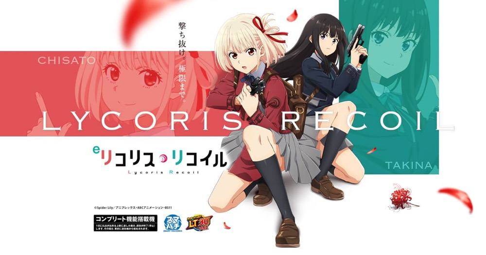

eリコリス・リコイル
約1/259.7から、SPECIAL LycoReco RUSHへ。
- 導入
- 2026年4月
- メーカー
- ニューギン
- 分類
- パチンコ
主要スペック
ライトミドルの初当りと、大出玉モードを備えたLT機。回転率と交換率を変えながら、初当り・RUSH当落・ULTIMATE DRIVEを簡易体験できます。
- 通常時大当り約1/259.7
- RUSH突入50%、132回転・継続約75%
- RUSH中は750個・3000個・6000個、ULTIMATE DRIVE継続50%
eリコリス・リコイルの見どころと計算条件
ライトミドルの初当りと、大出玉モードを備えたLT機。回転率と交換率を変えながら、初当り・RUSH当落・ULTIMATE DRIVEを簡易体験できます。
eリコリス・リコイルを数字で早分かり
結果では表記出玉と実獲得出玉を分け、250玉貸し・28玉交換の固定条件で差玉と収支を計算します。
約1/259.7からRUSHを目指す
通常時は約1/259.7で初当りを抽選し、約50%でSPECIAL LycoReco RUSHへ進みます。RUSHは132回転、継続率約75%として連チャンを簡易抽選します。
初当りが軽めでもRUSH非突入なら出玉は限られます。初当りまでの投資とRUSH当落を分けて見ると、同じ大当り回数でも収支が変わる理由を確認できます。
750個・3000個・6000個の出玉差
RUSH中は750個、3000個、6000個の振り分けを使い、ULTIMATE DRIVE到達後は継続50%の上位結果を簡易表現します。大きな出玉を引いた回と750個中心の回を比べられる設計です。
実機の全モード、残保留、細かなラウンド振り分けや演出信頼度は再現していません。表示する期待度はシミュレーション内部の抽選率です。
固定回転率と平均投資
回転率は16.6回/1,000円、貸出は250玉、交換率は28玉/100円で固定しています。約1/259.7の平均初当りまでの投資目安は約15,600円です。
平均投資は長期間の理論上の目安です。持ち玉、再プレイ、出玉削り、端玉は含めず、全利用者が同じ条件で結果を比べられるよう単純化しています。
結果画面で確認するポイント
- 初当り回転数が平均259.7回転より早いか遅いか
- RUSH非突入と突入後の収支差
- 3000個・6000個振り分けの影響
- ULTIMATE DRIVE到達前後の総出玉
平均回転と投資目安の計算
通常時の初当り確率は約1/259.7です。当サイトでは、1,000円あたり16.6回転という機種別の固定条件を使い、平均投資目安を「259.7 ÷ 16.6 × 1,000円」で計算します。この条件では約15,600円が平均投資の目安です。
通常ヘソ、250玉貸し・28玉交換で固定し、SPECIAL LycoReco RUSH突入率50%と継続率75%を簡易抽選します。表記出玉とは別に、打ち出しとオーバー入賞を簡易反映した実獲得出玉を収支へ使用します。平均値は長期間の理論上の目安であり、1回ごとの結果や実際の遊技収支を保証するものではありません。
シミュレーション結果の見方
当るまで初当りまでの回転数と投資目安
RUSHSPECIAL LycoReco RUSHへの突入と連チャン回数
出玉表記出玉と、打ち出しを反映した実獲得出玉
最終収支実獲得出玉を28玉交換で換算した収支目安
結果は自動で「マイ記録」に保存され、同じ機種を何回試したか、最高収支、勝率をあとから確認できます。
簡易シミュレーターについて
初当り・SPECIAL LycoReco RUSH・出玉の流れを固定条件で体験できます。JavaScriptを有効にすると、この位置にシミュレーター、演出、マイ記録、機種別ランキングが表示されます。
結果は娯楽・確率理解のための参考表示です。金銭的価値や交換価値はなく、実際の勝敗や収支を保証しません。18歳未満の方の利用はお控えください。
eリコリス・リコイルのよくある質問
eリコリス・リコイルはどんな台？
ライトミドルの初当りと、大出玉モードを備えたLT機。 通常時大当り約1/259.7が主な確認ポイントです。
eリコリス・リコイルの平均投資目安は？
当サイトの固定条件では1,000円あたり16.6回転として、平均15,600円が目安です。実店舗の回転率や持ち玉状況で変わるため、実収支を保証する値ではありません。
シミュレーターでは何を体験できる？
初当りまでの回転数、SPECIAL LycoReco RUSHへの突入、連チャンと出玉、さらにULTIMATE DRIVEを固定条件で簡易抽選します。実機の全演出や内部状態を完全再現するものではありません。
出玉と収支はどう計算する？
スペック上の表記出玉とは別に、打ち出しロスとオーバー入賞を簡易反映した実獲得出玉を算出します。250玉貸し・28玉交換の固定条件で差玉と収支目安を表示します。